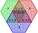

flowchart LR
A(sujet = élément) --- B(prédicat = a pour partie) --- C(objet = sous partie)
3 Principes de cartographie des connaissances
« Il faut demander aux algorithmes
de nous montrer
et la route,
et le paysage »
(Cardon, 2015, sec. 5)
« Le numérique est donc
à la fois ce qui est
autour de nous,
entre nous,
en nous »
(B. Bachimont, 2020)
Les principes de cartographie des connaissances que nous utilisons s’appuient sur des idées inspirées de nombreuses références Chapter 1 et des principes théoriques bien définis Chapter 2 à partir desquels nous concevons un design des connaissances et définissons des propriétés graphiques. Il va de soi que d’autres références définiraient d’autres designs et d’autres propriétés graphiques. Il serait particulièrement intéressant d’analyser en quoi tel ou tel auteur utilise dans ses œuvres des images mentales spécifiques qui en font un plasticien de la pensée. Il nous semble évident que les idées de Descartes et Spinoza n’ont pas la même plasticité, de même celles d’Heidegger et Bachelard ou de Wittgenstein et Deleuze. L’absolue plasticité du numérique permettrait sans doute de montrer ces idées suivant des modes de représentation propres à chacun de ces auteurs afin de les comparer ou de les utiliser pour un design de connaissance spécifique. Nous avons fait ce travail dans les lignes suivantes pour construire notre design des connaissances à partir d’idées dont la plasticité nous semble particulièrement fertile.
Les chapitres suivants explicitent comment à partir de ces références, de ces principes et des hypothèses qui en découlent, nous cartographions dans le Web (Section 3.1) des connaissances qui se développent dans l’espace et le temps (Section 3.2) suivant les pulsations existentielles d’un actant (Section 3.5) entre des espaces matériels (Section 3.3) et conceptuels (Section 3.4). Nous posons ici les bases théoriques et pratiques pour cartographier les frontières numériques que nous explorons depuis une dizaine d’années (Saleh, Szoniecky, & Ghenima, n.d.; Szoniecky, 2012) et qui font parti de nos axes de recherche principaux Section 4.2.1.
3.1 Cartographier dans un environnement Web
Un environnement Web se base avant tout sur une architecture Client / Serveur qui utilise le protocole HTTP pour organiser les échanges de données entre des machines et des utilisateurs via un navigateur (Balpe, Saleh, & Lelu, 1996) cf. ci-dessous1.
Nous ne ferons pas ici une analyse des technologiques de représentation des données (Andry, Kieffer, & Lambotte, 2022; Fekete & Boy, 2015) préférant nous focaliser sur les outils et les méthodes que nous utilisons dans le cadre de ce travail pour cartographier nos connaissances. Nous ne détaillerons pas non plus tous les éléments qui composent notre environnement2, mais uniquement les plus pertinents pour comprendre les principes de cartographie que nous avons mis en place dans ce travail pour gérer les données du côté serveur et naviguer dans leurs représentations du côté client.
3.1.1 Gérer les données sur les serveurs
Les serveurs sont des machines qui fournissent des ressources via une requête spécifique sur une adresse unique dans un environnement Web. Le protocole HTTP définit les conditions d’adressage de ces requêtes et les éventuels paramètres qui lui sont associés. Il existe une multitude de solutions pour gérer les données à partir de ce protocole et des langages informatiques associés comme PHP, Python, Java… Pour nos travaux de recherche, nous avions fait le choix de développer sur nos serveurs, une boite à outils basée sur PHP et une base de données spécifique (Szoniecky & Bouhaï, 2017, p. 141). Pour des questions de maintenance de l’environnement, de facilités de développement et de diffusion des données de la recherche, nous avons abandonné cette solution pour utiliser depuis quelques années l’environnement Web proposé par le CMS Omeka S3. Cette solution de gestion des archives numériques offre les fonctionnalités nécessaires pour modéliser une base de données spécifique respectant les principes du Linked Open Data4 et les moyens de manipuler ces données avec des vocabulaires, des modèles de ressource, des modules et des thèmes spécifiques. Une fois maîtrisés les éléments de cet environnement, les données produites par les recherches deviennent accessibles, manipulables et interopérables5.
« En utilisant aujourd’hui un tableur ou une base de données ad hoc pour stocker les données, non seulement on se prive de toute la richesse sémantique des LOD et de leur potentiel de traitement, mais encore on risque de ne pas pouvoir réutiliser l’information collectée. La communauté de recherche va ainsi continuer à parcourir mille fois le premier kilomètre, alors qu’une démarche collaborative de collecte de l’information, soutenue par des plateformes de recherche fondées sur les technologies sémantiques, permet de parcourir ensemble des milliers de kilomètres et de disposer, en très peu de temps et en faisant levier sur une curation collective des données, d’un graphe d’information de grande complexité, qualité et richesse. » (Beretta, 2023, sec. 15)
Pour chaque projet de recherche et d’enseignement qui nécessitent de manipuler des données, nous avons développé des environnements Omeka S avec le cas échéant des modules et des thèmes spécifiques. Plus particulièrement, pour ce travail d’HDR, nous avons rassemblé dans un environnement Omeka S les informations concernant notre curriculum vitae et la veille informationnelle que nous menons depuis plus de quinze ans pour construire notre écosystème de connaissances Chapter 4.
Pour ce faire, nous avons créé :
2 vocabulaires spécifiques :
30 modèles de ressource8 pour décrire les objets de recherche par exemple :
- Évènement CV : utilisé pour décrire les événements d’un curriculum vitae
- JDC Actant : utilisé pour décrire un actant dans un écosystème de connaissances
4 modules spécifiques pour une gestion spécifique des données dans Omeka S:
- Diigo Import : ce module permet d’importer les signets enregistrés dans une base de données Diigo y compris les copies d’écrans9.
- Zotero Import Plus : ce module10 basé augmente le module Zotero Import pour importer les notes prises dans Zotero ainsi que les documents associés aux références bibliographiques.
- JDC : ce module11 fournit les interfaces nécessaires pour modéliser un écosystème de connaissances suivant une ontologie éthique Section 2.2.
- CartoAffect : ce module12 permet de gérer les données pour la modélisation et la présentation des affects en relation avec un écosystème de connaissances.
3.1.2 Naviguer dans les représentations
La consultation de notre écosystème de connaissances se fait avec un navigateur Web comme Chrome ou Firefox et passe par des représentations que les utilisateurs explorent suivant les principes hypertextuels. Ces représentations consistent à mettre en relation des données avec un système de coordonnées cartésiennes qui possèdent 2 dimensions (Figure 3.213) ou 3 dimensions (Figure 3.314) . Ces coordonnées définissent des points qui sont associés pour former des lignes et des plans et ainsi disposer d’un vocabulaire graphique élémentaire (Kandinsky, 1991). Toutefois, la réalisation de cartographie en 3 dimensions demande beaucoup de temps et des compétences dont nous ne disposons pas dans le contexte de ce travail. Pour les graphiques que nous présenterons, nous avons donc décidé de n’utiliser que le système de coordonnées planaires. Il nous faut donc définir comment utiliser les 2 dimensions (x, y) pour représenter les multiples propriétés de nos données. On peut envisager de nombreuses solutions, mais toutes ne seront pas compréhensibles ni facilement manipulables suivant les données et les échelles auxquelles on souhaite les représenter. Nous choisissons donc de multiplier les environnements graphiques en deux dimensions et de les interconnecter les uns avec les autres afin de former un écosystème graphique présentant de manière optimale les multiples propriétés que les données possèdent.


Dans ce contexte d’écosystème graphique (Aït-Touati, Arènes, & Grégoire, 2019; Zreik, 2010), il est très important de disposer des moyens pour créer des graphiques à partir des données, mais aussi de manière réciproque gérer les données à partir des graphiques en concevant des interactions riches entre les données, les graphiques et leurs utilisateurs afin d’effectuer les quatre actions fondamentales sur les données : Cread Read Update Delete (CRUD). Nous ne sommes pas dans une vision statique de la représentation des données comme pouvait l’être (Bertin, 1999) qui prenait comme principe que les graphiques devaient être imprimables. Ce qui compte aujourd’hui c’est la capacité qu’ont les systèmes de visualisation d’être manipulables pour créer les conditions d’une interprétation des données (Drucker, Mignon, & Bortolotti, 2020) et l’expression d’une argumentation spécifique (Desfriches Doria & Meunier, 2021a).
C’est pourquoi nous avons choisi de travailler dans un environnement Web afin de créer dynamiquement des graphiques à partir d’un flux de données et surtout de rendre ces graphiques interactifs. L’autre choix important que nous avons fait est d’utiliser le langage graphique SVG15 qui permet de manipuler chaque composant graphique de manière autonome (Fry, 2008). Ainsi les points, les lignes et les plans disposent d’une autonomie en termes de propriétés graphiques, événementielles et informationnelles. Grâce à la librairie JavaScript D3.js16 (Data Driven Document) nous pouvons gérer ces propriétés en pilotant les graphiques à partir des données ou à l’inverse les données à partir des graphiques.
Dans cet environnement Web très ouvert et fertile, les possibilités de dynamisme et d’interaction entre les données, les graphiques et leurs utilisateurs sont potentiellement infinies. Il convient donc de spécifier plus précisément les choix que nous avons faits pour cartographier nos connaissances.
3.2 Représentations spatio-temporelles
Les premières informations à prendre en compte dans la cartographie des connaissances sont le temps et l’espace qui constituent une base fondamentale de la recherche en sciences humaines : l’histoire et la géographie. Ce sont les données communes à toutes les analyses en sciences humaines : quand ? Où ?
3.2.1 Cartographier la géographie
Pour réfléchir sur ces informations les humains ont depuis longtemps développé des systèmes de représentation que ce soit pour le temps (Domenget, Miège, & Pélissier, 2017; Rosenberg & Grafton, 2013), l’espace (Béguin & Pumain, 2017) ou la combinaison des deux (Aït-Touati et al., 2019; Giacona, Martin, Eckert, & Desarthe, 2019; M. Serres, 1997). Nous ne rentrerons pas ici dans l’analyse de ces représentations cela dépasserais de loin notre propos qui est de présenter nos principes cartographiques. Nous renvoyons le lecteur curieux à la veille que nous faisons depuis plus de dix ans sur cette question17.
Sur notre Terre, les données spatiales sont définies par trois propriétés : une latitude, une longitude et une altitude. Les représentations des données géographiques sont aujourd’hui grandement aidées par les outils qui rendent disponibles pour les concepteurs les fonctionnalités nécessaires à la manipulation des cartes. Le principe de représentation est commun à tous ces outils : x = longitude, y = latitude. Ce qui diffère c’est le type de projection utilisé pour représenter les données suivant un point de vue particulier qui mettra l’accent sur une dimension spatiale. Les exemples ci-dessous montrent comment suivant le type de projection les représentations se transforment :
 |
 |
 |
| Jacques Bertin’s 1953 | Hammer retroazimuthal | Spherical Mercator |
Dans notre cas, pour concevoir des cartes géographiques en deux dimensions nous utilisons des librairies JavaScript Open Source comme leaflet.js19 ou D3.js qui permettent de manipuler des données géographiques modéliser avec le format GeoJSON20. Voici par exemple la représentation géographique de mes collaborations dans le monde à partir de mes dépôts dans HAL21 :

Cette carte montre les pays hors de la France où sont publiés mes textes scientifiques et les conférences auxquelles j’ai participé. Parallèlement aux données géographiques, la couleur des pays est proportionnelle au nombre de collaborations. Cette carte montre que mes collaborations se développent essentiellement avec des pays francophones et des pays de l’hémisphère nord.
3.2.2 Cartographier le temps
Pour les informations historiques, nous avons besoin de gérer deux propriétés, une date de début et une date de fin. Notons que la durée n’est pas une propriété nécessaire puisqu’elle se calcule à partir de la différence entre la date de début et la date de fin. Nous posons comme principe qu’une date de fin nulle indique une durée en cours. La frise est sans doute la représentation la plus courante et la plus commode à réaliser puisqu’elle associe une coordonnée graphique avec une échelle de temps, le plus souvent x pour une représentation horizontale et parfois y lorsqu’elle est verticale. Dans notre enfance, nous avons tous réalisé des frises historiques, elles peuplent nos salles de classe et prolifèrent sur le Web22. Nous avons une compréhension évidente de la frise historique, de son fonctionnement et des informations qu’elle diffuse : événements ponctuels, périodes. Voici par exemple la représentation en frise historique de mon activité d’enseignant chercheur :

Cette frise historique23 montre l’évolution de mes activités d’enseignant chercheur suivant plusieurs types d’activité. Comme les outils Web de visualisation des cartes géographiques, cette visualisation fournit des fonctions de zoom, de déplacement et d’hypertextualité pour faciliter la lecture des données qui si elles sont trop détaillées, ne sont plus visibles. Là encore, la cartographie des connaissances dans le Web est conçue comme un outil de navigation dans les données.
Les connaissances sont toujours en rapport avec l’espace et le temps, mais nous posons comme hypothèse qu’entre les connaissances des physicalités et celles des intériorités, entre l’étendue et la pensée, l’espace et le temps n’ont pas les mêmes modes de perceptions et d’expressions.
« La durée se dit en fonction des parties extensives et se mesure au temps pendant lequel ces parties appartiennent à l’essence. Mais l’essence en elle-même à une réalité ou une existence éternelle ; elle n’a pas de durée ni de temps qui marque l’achèvement de cette durée. »(G. Deleuze, 1968, p. 291)
Nous suivons sur ce point les principes spinozistes d’une modélisation ontologique corrélée à une éthique en définissant trois dimensions de l’existence corrélées avec trois genres de connaissance24 Section 2.2. Examinons maintenant comment nous définissons de nouveaux principes cartographiques à partir de ces propositions.
3.3 Espaces matériels : représenter des hiérarchies
Notre principe de cartographie des espaces matériels consiste à les considérer uniquement dans leur dimension matérielle Section 2.2.1 en tant que physicalités composées de parties extensives modélisables par leurs propriétés physico-chimiques : largeur, hauteur, profondeur, masse, couleur, atome, molécule… Par exemple, dans les espaces matériels un livre est considéré du point de vue de sa taille, son nombre de pages, son poids, sa matière, etc. Dans l’espace matériel, on ne prend pas en compte l’auteur et la thématique du livre qui respectivement sera cartographié comme actant (Section 3.5) et comme élément d’un espace conceptuel (Section 3.4). Dans les espaces matériels, les mots du livre sont des traces de couleur qui génère des connaissances de l’ordre des chocs ; c’est-à-dire une réaction entre des parties extensives celles de la trace et celles de nos capteurs biologiques ou artificiels. Notons que ces chocs en entraînent d’autres qui eu mêmes se propagent dans un phénomène d’accroissement de l’entropie constitutif de l’univers chaotique du premier genre de connaissances, celui des idées inadéquates qui se répandent sans fin par composition et décomposition :
« Qu’est-ce que vous racontez là, mais alors cette nature, c’est un pur chaos ! Pourquoi c’est un pur chaos ? Parce que vous remarquerez que, chaque fois qu’un corps agit sur un autre, il y a toujours composition et décomposition à la fois. Ce n’est pas à ce niveau-là que je pourrais dire, il y a du bon et du mauvais. Pourquoi ? Parce qu’il y a forcément composition et décomposition, les deux l’un dans l’autre. » (G. Deleuze, 1981)
Ces compositions et décompositions des corps les plus simples que sont les parties extensives sont modélisables suivant une hiérarchie de parties et de sous-parties. Par exemple le livre est décomposable en parties plus petites : page → paragraphe → phrase → mot → caractère. Ce même livre est aussi composable avec d’autres parties plus vastes : étagère → salle → bibliothèque. La modélisation des espaces matériels est une structure hiérarchique qui potentiellement se compose jusqu’aux limites de l’univers observable (Figure 2.5) et se décompose jusqu’à l’infiniment petit de l’échelle de Plank (Figure 2.6) en passant par l’échelle de l’être humain (Figure 3.6). Nous verrons plus loin combien le choix de l’échelle cartographique est primordial (Section 4.1)
Pour cartographier les espaces matériels en tant qu’ensemble des parties extensives définissables par leurs propriétés physico-chimiques et leurs compositions vers l’infiniment grand et décompositions vers l’infiniment petit, nous optons pour un modèle de diagramme hiérarchique appelé « treemap » et proposé par (Shneiderman, 1998) qui se compose de rectangles imbriqués représentant un élément et ses sous-parties et dont la taille des rectangles est proportionnelle à la valeur numérique d’une propriété, par exemple le nombre d’éléments que contient la sous-partie .
En utilisant l’objet TreeMap25 de la librairie D3.js, nous avons implémenté ce modèle de diagramme dans un module JavaScript pour le rendre dynamique, interactif, et ainsi représenter les espaces matériels que nous cartographions soit à partir de données existantes soit en les créant au fur et à mesure de l’exploration. Notons que pour faciliter la visualisation des dimensions physiques complexes, nous avons implémenté une navigation directe vers une partie ou une sous-partie et une navigation hiérarchique par zoom dans une partie et dé-zoom vers le parent. Par exemple, nous avons cartographié notre CV en utilisant ce modèle de diagramme avec comme paramètre de taille des rectangles la durée d’un événement :

Dans le cas de ce diagramme, la durée d’un événement cumule l’ensemble des durées des événements qui le compose ce qui explique une durée de plusieurs centaines d’années pour le CV. D’autre part, cette durée exprime une période de travail et ne prend pas en compte les activités parallèles à l’inverse de la frise historique (Figure 3.5).
Dans les espaces matériels, les connaissances sont des chocs qui ne durent qu’un instant, celui du contact entre les parties extensives. On peut les dater plus ou moins précisément, ils peuvent se répéter encore et encore, mais ils n’ont pas de durée. Ce qui dure c’est l’onde du choc qui se propage dans les physicalités et dans les intériorités des acteurs qui participent à l’événement ce qui génère d’autres chocs dans les espaces matériels et des connaissances d’un autre genre dans les espaces conceptuels.
3.4 Espaces conceptuels : représenter des topologies
Les espaces conceptuels se prêtent particulièrement bien à la modélisation prétopologique, car ils correspondent à ces deux principes fondamentaux :
« pretopology can be used to represent a system where the relation between an element and a set is not a simple aggregation of the individual relations to the members of the set. In this it is fundamentally different from a graph.
pretopology establishes one single relation between a particular element and a particular group. In this it is different from a multilayer network. » (Laborde, 2019, p. 28)
Nos principes de modélisation utilisent les notions de base de la prétopologie pour guider l’utilisateur dans la construction d’une carte et pas uniquement pour représenter les résultats d’une analyse automatique comme peuvent le faire par exemple les outils de modélisation de graphes comme Gephi (Bastian, Heymann, & Jacomy, 2009). L’idée principale de cette démarche est de construire pas à pas des modèles conceptuels relativement simples avec un protocole de formalisation les rendant compréhensibles, interopérables et calculables. Les choix nécessaires à la construction de ces modèles sont ceux du modélisateur et pas ceux d’un algorithme qu’on bricole en jouant avec ses paramètres pour obtenir la représentation désirée. Avec les principes que nous proposons, le modélisateur maîtrise la signification de ces choix ce qui n’est pas toujours le cas quand on applique un algorithme sur une grande quantité de données. L’objectif est d’éviter que le modèle serve uniquement d’illustration justifiant un discours par une « preuve » formelle, mais soit le discours à part entière.
Le processus de cartographie que nous proposons à partir d’une modélisation prétopologique consiste à définir un espace conceptuel en lui donnant un titre. Cet espace est représenté par une ellipse et par son titre. Dans un deuxième temps, cet espace est peuplé d’un ensemble d’éléments appartenant à l’espace. Par exemple, l’espace conceptuel que nous cartographions porte le titre de « humanités numériques », il se compose des éléments : humains, machines, collaboration, efficace, biais, cognitifs…
Dans un troisième temps, la modélisation prétopologique consiste à créer un ensemble de parties P(X) qui sont des sous-ensembles constitués avec une application d’adhérence qui s’applique aux éléments de l’ensemble.
« On appelle prétopologie sur X, toute application adh de P(X) dans P(X) qui vérifie :
i - adh (ø) = ø
ii - ∀À ∈ P(X), A ⊂ adh(A)
(X, adh) est appelé espace prétopologique.
adh est encore appelée adhérence. » (Dalud-Vincent, 2017, p. 47)
Dans notre cas, l’application d’adhérence consiste à « conceptualiser » les chaînes de caractères continues pour modéliser des sous-ensembles sous forme de mots : P(X) = [« humains », « machines », « collaboration », « efficace », « biais », « cognitifs »]. Ces mots sont eux aussi représentés par une ellipse et par un titre ce qui de manière fractale fait que chaque élément de l’ensemble est lui-même un ensemble disposant de propriétés et de méthodes utiles pour sa manipulation cartographique. De même, l’espace conceptuel « humanités numériques » peut-être utiliser comment élément d’un ensemble plus vaste par exemple « sciences humaines ».
Pour faciliter la manipulation des dimensions conceptuelles Section 2.2.2 nous travaillons à un dispositif de cartographie qui présente un espace dynamique et interactif dans lequel les cartographes pourront utiliser graphiquement les applications prétopologiques Section 2.2.2.1 pour : créer un espace, le définir, créer des sous-ensembles et le mettre en relation avec d’autres espaces suivant des applications prétopologiques spécifiques. Pour faciliter le positionnement des concepts les uns par rapport aux autres en évitant le chevauchement des titres, nous avons fait le choix d’utiliser une grille hexagonale comme le propose (Rodighiero, 2021) pour réaliser la carte des affinités d’un laboratoire de recherche ou comme nous l’avons expérimenté pour paramétrer le filtrage des flux d’informations (Szoniecky, 2011). Une grille hexagonale permet de représenter les relations d’un élément avec vingt-quatre autres sans aucun chevauchement, ce qui peut paraître faible lorsqu’on pense à l’infinité des relations possibles entre les concepts, mais qui offre l’avantage de contraindre la cartographie sémantique dans un espace relativement simple et donc facilement compréhensible. De plus, la construction fractale des rapports entre ensembles et éléments rend infinie la possibilité d’expression puisque le regroupement des éléments dans un ensemble crée la possibilité de représenter vingt-quatre nouveaux éléments. Pour des raisons d’ergonomie graphique et algorithmique, les espaces conceptuels sont structurés par une grille hexagonale :
« L’hexagone permet de “paver” l’espace en un agencement sans fin, qui, potentiellement, permet de dessiner des réseaux infinis. […] Choisir une grille hexagonale réduit le bruit numérique et facilite la lecture. » (Rodighiero, 2021, p. 76)
Nous nous sommes inspirés des travaux d’Amit Patel26 pour mettre en place une grille hexagonale et les fonctionnalités nécessaires pour les applications prétopologiques que nous avons codées dans une librairie JavaScript27 et mises en application dans un module Omeka S afin de gérer les manipulations d’informations dans une base de données.
Une fois connecté à l’application de cartographie, la première action a effectué est de charger une carte ou d’en créer une. Lorsque l’on crée une carte, l’application propose une espace avec une grille hexagonale de rayon 2 avec positionné au centre de cette grille un concept “vide” qui lui aussi possède une grille hexagonale permettant ainsi de fractaliser la cartographie avec des grilles hexagonales incluant d’autres grilles hexagonales, etc. Notons que cette grille est créée par défaut avec un rayon de 2, mais qu’elle peut être étendue en déplaçant les bords de l’espace.
Les utilisateurs peuvent ensuite utiliser les applications d’adhérence que nous venons de présenter, qui consiste par exemple à « conceptualiser » un espace en lui donnant un titre. Il suffit de cliquer dans l’espace conceptuel pour choisir une position et faire apparaître un formulaire permettant de saisir le titre du concept. Il est important de pouvoir créer tous les concepts possibles à partir de n’importe qu’elle chaîne de caractères, car une des difficultés bien connues dans l’usage des ontologies ou des vocabulaires formalisés est de trouver la « bonne » référence dans un ensemble souvent très vaste dont on ne connaît pas l’ensemble des références et surtout quand on ne trouve pas d’équivalent à ses propres habitudes linguistiques. C’est pourquoi, dans nos principes de cartographie des espaces conceptuels, l’expression des concepts est libre comme c’est le cas dans les folksonomies (Broudoux, François, Dominique, Cécilia, & Clotilde, 2012). Toutefois, lors de la saisie du titre du concept, un processus d’autocomplétion du champ de saisie renvoie les concepts déjà enregistrés dans la base de données à partir de quelques lettres ; l’utilisateur est informé des concepts existants et peut donc choisir une référence que d’autres utilisateurs ont déjà utilisée ce qui permet de créer une interopérabilité formelle. Notons que cette interopérabilité ne présage pas d’un consensus sur le sens du concept, toutefois elle est grandement utile pour rassembler les différents acteurs qui l’utilise afin qu’il discute de leurs accords et divergences Section 4.2.5.
L’application « conceptualiser » enregistre dans une base de données Omeka S la position d’un concept défini par un actant ici et maintenant dans un espace conceptuel de référence en décomposant ces informations dans les propriétés suivantes :
- identifiant de la position
- titre de la position
- identifiant de l’espace de référence
- coordonnées de la position dans l’espace de référence
- identifiant de l’actant
- date du choix de la position
- lieu du choix de la position
Décomposer l’actant, le concept et sa position a pour avantage de partager un concept commun avec d’autres utilisateurs tout en conservant le point de vue de l’actant sur ce concept. De plus, l’enregistrement des étapes de construction de la carte rend accessible le processus créatif des auteurs. Ainsi, « aimer » et « haïr » peuvent être commun à plusieurs personnes, mais la distance entre ces deux concepts peut varier suivant les individus, le temps, l’espace… Il y a donc une décorrélation entre le concept et ses usages. Le concept est virtuel, c’est une potentialité qui s’actualise dans une « action située » c’est-à-dire une action qui s’analyse :
«
a) en réinscrivant l’action dans une totalité dynamique dont l’environnement lui-même fait partie ;
b) en faisant du processus concret d’organisation d’un cours d’action en situation, et non plus de la représentation et de la délibération ex ante, et de l’esprit où elles se produisent, le lieu de la cognition ;
c) en distribuant cette cognition sur le système fonctionnel agent/action/environnement;
d) en réduisant la part du raisonnement, du calcul et de la délibération, bref de l’intellection, dans l’organisation de l’action, au profit de la perception directe ;
e) en rendant compte du couplage perception/action à l’aide d’un schème qui ne traite plus les informations fournies par la perception comme des prémisses dans un raisonnement pratique ; et
f) en faisant de la situation l’instance principale du contrôle de la conduite. » (Quéré, 2020, sec. 3)
Cette définition minimale de l’espace prétopologique peut être enrichie par d’autres applications qui enrichissent l’espace de nouvelles propriétés comme celui qui est à l’œuvre avec IEML. Cette activité purement conceptuelle consiste à affiner la cartographie en définissant des rapports entre les concepts à la manière de ce qui se fait lorsqu’on développe une ontologie (Bruno. Bachimont, 2007) en utilisant par exemple des propriétés de relation issue du vocabulaire SKOS (Isaac, 2011).
Dans notre cas, l’application « intérieur » va nous permettre de définir les espaces conceptuels à l’intérieur d’autres espaces conceptuels en suivant la définition :
« Soit une application i : P(E) → P(E) appelée intérieur et définie comme suit :
∀A, A ⊆ E l’intérieur de A, i(A) ⊆ E est telle que :
– i(A) = [a(Ac)]c (P1)
– i(A) ⊆ A (P2)
avec Ac le complémentaire de A soit E − A. » (Levorato, 2008, p. 40)
Pour utiliser cette application, il suffit de cliquer dans un des hexagones de la grille pour faire apparaître un formulaire permettant de choisir un concept et les relations que ce concept entretient avec le concept dont il est un sous-espace. Ces relations sont exprimées avec le vocabulaire des relations de SKOS28, mais sans toutefois limiter les possibilités d’associations aux contraintes logiques. Par exemple, il est illogique que deux concepts possèdent à la fois une relation hiérarchique “plus spécifique” (skos:narrower) et une relation “plus générique” (skos:broader). Toutefois, il nous semble important de laisser la possibilité aux usagers d’exprimer ces relations illogiques afin de laisser une place aux incohérences et aux inventions poétiques.

3.5 L’actant : représenter des communautés agissantes
Pour représenter la dimension des actants Section 2.2.3, nous avons fait le choix de l’hexagone dont la forme est entre le rectangle qui représente les physicalités et le cercle qui représente les concepts. De plus, les six côtés de l’hexagone offrent une possibilité de trois plages de connexion vers le haut où sont représentées les physicalités et trois plages de connexion vers le bas où l’on trouve les concepts. L’hexagone est une forme qui peut être utilisée pour paver l’espace de manière fractale puisque l’intérieur de l’hexagone peut lui aussi être pavé avec des hexagones (Figure 3.8). À l’hexagone nous avons associé un cercle qui défini l’intériorité d’un actant (Figure 3.10) ou de plusieurs actants qui se partagent la même intériorité par exemple dans le cadre d’une institution ou d’un groupe d’individus qui mettent en commun des concepts et des pouvoirs (Figure 3.11) ou dans le cas d’une modélisation globale d’un écosystème qui possède sa propre intériorité composée de plusieurs actants ayant eux-mêmes leurs propres intériorités (Figure 3.12).


Un des autres grands intérêts d’utiliser des structures hexagonales pour modéliser les actants de l’écosystème de connaissances vient du fait qu’il est possible de créer des formules logiques par positionnement des hexagones les uns par rapport aux autres. Voici par exemple comment utiliser des hexagones pour créer des diagrammes de Venn (Coumet, 2020; Venn, 1866) afin de modéliser l’intersection entre deux, trois et quatre ensembles d’actants :


Chaque espace défini par les intersections renvoie un ensemble particulier d’actants, par exemple Figure 3.13 modélise les actants qui appartiennent à l’institution Verte, à l’institution Rouge et ceux qui sont à la fois dans l’une et dans l’autre. Les diagrammes de Venn sont très pratiques pour avoir une vision d’ensemble de toutes les possibilités d’inclusion de plusieurs ensembles. Toutefois, lorsque le nombre d’ensembles est supérieur à cinq, il devient difficile de lire correctement certain cas d’inclusion comme le montre Figure 3.15 et même très difficile de les représenter sous forme hexagonale. Dans le cas où les ensembles d’actants sont nombreux, il convient donc de trouver d’autres solutions graphiques pour représenter l’appartenance d’un actant à une institution, par exemple en représentant une autre dimension existentielle : les rapports.
3.6 Les rapports : représenter des relations
Pour représenter la dimension des rapports Section 2.2.4 le modèle hypertextuel basique : nœud - ancre - lien et depuis longtemps utilisé (Balpe et al., 1996) de même que le triplet RDF sujet - objet - prédicat (Gandon, Faron-Zucker, & Corby, 2012) que le W3C préconise pour modéliser des rapports logiques en RDF[^principecarto-37-1]. Ils sont traditionnellement représentés sous la forme d’un graphe où le sujet et l’objet sont des entités et le prédicat un label décrivant le lien entre les deux entités : 
Nos principes de cartographie s’accommodent parfaitement de cette modélisation par triplet RDF, mais nous faisons le choix d’un autre type de représentation qui reprend les recommandations du W3C avec le format « Open Annotation »29 qui code de façon très simple les relations entre des ressources numériques afin de définir un point de vue particulier sur celles-ci. Suivant ce modèle une “annotation” est ce qui met en rapport un “body” à une “target”. De notre point de vue, la modélisation du rapport est donc une “annotation” qui dans un ici et maintenant va mettre en relation deux ressources.

Les recherches menées en théories des graphes (Moretti, Jeanpierre, & Dobenesque, 2008) ont montré leur souplesse dans la capacité de mettre en relation des éléments hétérogènes les uns avec les autres où : > « la réalité abordée est réduite à des symboles sans signification pour être soumise à des manipulations aveugles. » (B. Bachimont, 2020).
Nous défendons ici une tout autre approche puisque la modélisation des rapports que nous proposons s’inscrit dans une démarche où ne réduisons pas les objets que nous manipulons uniquement à des symboles, mais nous les associons à une « organologie générale » (Stiegler, 2005) où chaque élément appartient à une dimension existentielle qui contraint les manières de le décrire et des le mettre en rapport avec d’autres. Potentiellement, il est possible de mettre en rapport n’importe quelle ressource avec n’importe quelles autres, quelle que soit la dimension existentielle à laquelle elle appartient. Notre modèle propose quatre dimensions existentielles et trois positions pour définir un rapport ce qui donne 4*4*4 = 64 possibilités de rapports. Toutefois, de notre point vu, ces 64 possibilités de rapport ne sont pas toutes cohérentes comme le résume le tableau suivant Figure 3.17 qui présente les rapports cohérents en vert et ceux qui ne le sont pas en rouge :
On le voit, la majeure partie des relations sont pour nous incohérentes (en rouge) puisque sur 64 possibilités nous n’en retenons que 9 (en vert). Insistons sur le fait que ces incohérences le sont de notre point vu et que d’autres personnes pourraient considérer que d’autres rapports sont possibles suivant leurs manières de penser les connaissances. C’est ici que se situent les débats scientifiques non pas au niveau des techniques informatiques ou de la justesse mathématique, mais au niveau épistémologique. Nous avons fait le choix de limiter les possibilités aux cas qui correspondent à l’épistémologie que nous pratiquons Chapter 3, mais de nombreuses questions se posent :
Peut-on considérer comme sujet uniquement les actants et comme prédicat uniquement les concepts ?
Les concepts peuvent-ils être des objets ?
Les physicalités peuvent-elles être des prédicats ?
On peut tenter de répondre à ces questions en trouvant des exemples précis dans la littérature ou dans la vie courante qui montre la cohérence ou non des rapports. Mais on pourrait aussi trouver des réponses à ces questions sans aucun rapport au “réel” pour expérimenter la pertinence d’hypothèses farfelues. Ce qui nous importe ici c’est de montrer qu’il est possible de modéliser un écosystème de connaissance en explicitant un modèle. Celui sur lequel nous nous appuyons Section 2.2 introduit une séparation nette entre les actants comme milieu, entre les dimensions des physicalités et des intériorités, entre les attributs de l’entendu et de la pensée. Nous posons comme principe de modélisation que l’objet est une physicalité, que le prédicat est un concept et que le sujet est un actant.
Attention, ces restrictions n’empêchent pas de faire d’une personne un concept comme le fait par exemple la philosophie avec le personnage de l’idiot ou quand on parle de Napoléon en politique ou dans une fiction. De même, les physicalités peuvent être conceptualisés pour en parler en terme générique et pas spécifique. La physicalité banane dans la coupe à fruits sur la table, devient alors banane en tant que fruit jaune et allongé des zones tropicales. Il est toujours possible de modéliser une entité suivant une dimension particulière afin de s’interroger sur un point de vue spécifique. C’est ce que nous retrouvons dans l’hypothèse Gaïa qui fait de notre Terre non plus uniquement comme un ensemble de physicalités, mais comme actant (Latour, 2015). C’est aussi ce que font les poètes en transformant des concepts ou des émotions en actants autonomes. Globalement, la transformation d’une dimension physique ou conceptuelle en actant est un processus d’agentivité (Hörl & Plas, 2012; Ingold, n.d.) qui est de la responsabilité du modélisateur dont les choix orientent explicitement ses analyses vers un mode d’existence spécifique :
« sujet et objet, loin d’être au début de la réflexion comme les deux crochets indispensables auxquels il convient d’attacher le hamac où va pouvoir somnoler le philosophe, ne sont que des effets assez tardifs d’une véritable histoire des modes d’existence » (Latour, 2009, p. 5)
Pour gérer ces informations dans la base de données, nous avons utilisé le module Omeka S “Annotation” développé par Daniel Berthereau31 afin de créer des rapports entre des ressources physiques, actants et concepts. Notons que cette modélisation est elle aussi fractale puisqu’un rapport en tant que ressource peut être en relation avec les autres dimensions existentielles, par exemple pour qualifier le rapport avec un concept particulier, comme ceux proposés avec le langage SKOS Figure 3.9.
Pour représenter les rapports dans nos diagrammes de visualisation des complexités existentielles, nous utilisons des lignes avec un début sous forme de cercle vert correspondant à l’objet, un milieu sous forme de carré blanc correspondant au sujet et une fin sous forme de flèche rouge correspondant au prédicat. Ce choix de représentation est motivé par la forme générique d’une existence informationnelle où le centre est occupé par l’actant qui dans nos contraintes de possibilité des rapports est toujours le sujet.
Nous venons de décrire comment représenter les quatre dimensions de l’existence que nous utilisons pour modéliser les écosystèmes de connaissances. Ces modélisations sont autonomes quant à leurs propriétés spécifiques et leur mode de représentation. Toutefois, il convient de les utiliser ensemble pour obtenir une vision globale de l’écosystème. Pour cela, nous avons besoin d’un nouveau principe pour associer ces dimensions existentielles et les représenter : le crible.
3.7 Modéliser des cribles : vers une cartographie des subjectivités32
Définir des principes de cartographie et choisir des modèles efficaces ne suffisent pas pour modéliser un écosystème de connaissances respectueux des différents points de vue et de leurs évolutions. Il est aussi nécessaire de concevoir une méthodologie pour récolter des données dont on peut évaluer les dimensions objectives et subjectives, c’est-à-dire celles qui dépendent du choix d’un individu et celles qui utilisent des systèmes de référence reconnus. Pour reprendre les mots de Guattari, notre objectif est de concevoir des « cribles » afin de produire des données dont on peut discerner le subjectif et l’objectif :
« dans tous les registres des cribles se constituent en interface entre 1) les virtualités virulentes du chaos, les proliférations stochastiques et 2) les potentialités actuelles dûment répertoriables et consolidables. » (Guattari, 1992, p. 140)
Le crible filtre les flux d’informations dans un « fourmillement de petites inclinaisons » qui composent un « tissu de l’âme » (G. Deleuze, 2003) interface entre le monde et l’individu :
« le monde entier n’est qu’une virtualité qui n’existe actuellement que dans les plis de l’âme qui l’exprime, l’âme opérant des déplis intérieurs par lesquels elle se donne une représentation du monde incluse. » (G. Deleuze, 1988, p. 32)
La notion de crible est particulièrement intéressante parce qu’elle fournit une analogie dont on peut faire une représentation dynamique et interactive dans le but de concevoir une application de modélisation des écosystèmes de connaissances. Pour cela, nous simplifierons la complexité des phénomènes de perception et d’expression que le crible met en œuvre en le comparant à une passoire dont les trous sont autant d’indicateurs définissables par une expression logique composée :
d’un sujet = le flux d’information,
d’un objet = l’indicateur
d’un prédicat = l’opérateur de la sélection.
Par exemple, dans le cas de l’ustensile de cuisine passoire, les trous du crible ont comme description :
sujet = les pâtes qui cuisent dans l’eau,
objet = être un fluide,
prédicat = retiens ce qui n’est pas l’objet.
Les cribles que nous concevons utilisent ce même principe : une interface qui dans un premier temps retient le flux puis le discerne suivant les expressions qui criblent cette interface. Ce processus est fractal, en discernant le flux, le crible produit un flux qu’un autre crible peut discerner et ainsi de suite. À chaque passage du flux d’information par le crible, l’information se transforme en donnée c’est-à-dire en une information discernable. En disposant les cribles en couches successives, on forme un réseau d’expressions logiques dans lequel les flux d’information passent se transformant ainsi en données de plus en plus discernables. Cette description correspond tout à fait à un réseau de neurones artificiels (perceptron) que l’on peut associé en couche pour développer des systèmes d’apprentissage profond :

Pour mieux comprendre comment le crible opère en tant qu’interface, nous le décrivons à la lumière du cycle de la sémiose Figure 2.3. Le fonctionnement physiologique de la signification est un cycle continu entre d’un côté le « monde naturel » et une « élaboration sémiotique » à travers une interface et un processus d’anasémiose : « un enchaînement de modules, traduisant en impressions de continuum les phénomènes digitaux du monde » (µ, Edeline, & Klinkenberg, 2015). Puis d’un autre côté, entre une élaboration sémiotique et le monde naturel à travers une interface et un processus de catasémiose défini comme une « série de traitements par des modules spécialisés, intermédiaires entre le traitement des informations par le cortex et les effectuations sur le monde » (Ibid.). De ce point de vue, le crible est l’interface qui transforme par un pouvoir de discernement (anasémiose) le monde naturel en élaboration sémiotique, elle-même transformée par le crible en pouvoir d’agir sur le monde (catasémiose). À l’expression « monde naturel » utilisée par (µ et al., 2015), nous préférons le concept de « physicalités » que propose (Philippe. Descola, 2005) pour s’affranchir d’une vision trop « naturaliste » d’appréhender le monde. Selon cet anthropologue, la signification que nous donnons au monde se conçoit globalement comme la manière dont nous créons des relations entre des « physicalités » et des « intériorités ». Parmi les quatre grandes manières de créer ces relations au monde (naturalisme, animisme, totémisme et analogisme), l’analogisme nous intéresse particulièrement, car elle considère que le monde se compose en relation avec un chaos, mais plus encore que ce mode d’existence est celui du numérique et de l’Internet comme le souligne Michel Serres :
« un océan vertigineux et des réseaux de relations toujours en train de multiplier leurs connexions définit en rigueur l’analogisme, mot qui résume et peint à merveille notre monde objectif, nos travaux cognitifs, nos rêves subjectifs ainsi que les collectifs qui naissent aujourd’hui et feront la politique du futur. » (Michel. Serres, 2009, p. 85)
Pour donner du sens à ce monde de chaos, les cribles offrent des réseaux de correspondances facilitant le travail d’interprétation :
« Rappelons que l’identification analogique repose sur la reconnaissance d’une discontinuité générale des intériorités et des physicalités aboutissant à un monde peuplé de singularités, un monde qui serait donc difficile à habiter et à penser en raison du foisonnement des différences qui le composent, si l’on ne s’efforçait de trouver entre les existants, comme entre les parties dont ils sont faits, des réseaux de correspondance permettant un cheminement interprétatif. » (P. Descola, 2006, p. 182)
Concevoir un crible entre objectivité et subjectivité, monde naturel et délibération sémiotique, physicalités et intériorités, consiste dans l’univers du numérique à définir une analogie pour modéliser les cohérences nécessaires à la récolte des données et à leurs interprétations. Le crible sujet – prédicat – objet est une structure trop simple et beaucoup trop plastique pour réduire suffisamment les « proliférations stochastiques », nous proposons d’enrichir cette structure avec des règles analogiques supplémentaires qui minimiseront les réseaux de correspondances et les chemins interprétatifs possibles.
3.7.1 Proposition d’un crible
En partant de la structure sujet – prédicat – objet, nous proposons de concevoir un crible pour modéliser notre écosystème de connaissances en nous focalisant sur les références qui composent notre bibliographie. Globalement, l’analyste devra s’interroger sur les caractères génériques et spécifiques des niveaux de modélisation. Si tous les éléments qui composent un niveau sont ressemblants par rapport à un indicateur, ce niveau est spécifique, il n’est pas nécessaire de le détailler. Par contre, s’il existe des différences entre les éléments par rapport à un même indicateur, le niveau est générique, il convient alors de le détailler en niveaux spécifiques. Par exemple, si j’utilise l’indicateur « à comme mot numérique » et que tous les paragraphes d’un même chapitre respectent cet indicateur, le niveau chapitre est spécifique, il n’est pas nécessaire de le détailler en paragraphe. Dans le cas contraire, le niveau chapitre est générique, il convient de le détailler en paragraphe pour modéliser ceux qui respectent l’indicateur et ceux qui ne le respectent pas.
Concernant, l’objet de notre structure basique de modélisation, nous le considérons uniquement comme la description des dimensions physiques et des matérialités Section 3.3. L’objet se décrit de manière arborescente de façon à définir les parties qui composent un élément. Chaque branche donne des détails supplémentaires sur l’objet suivant la forme logique :
Par exemple, dans le cas de notre bibliographie, un des objets de la modélisation est défini par : livre → chapitre → paragraphe → phrase → mot →caractère. ::: {#fig-hierBiblio}
flowchart LR
A(livre) --- B(a pour partie) --- C(chapitre)
C --- B1(a pour partie) --- D(paragraphe)
D --- B2(a pour partie) --- E(phrase)
E --- B3(a pour partie) --- F(mot)
F --- B4(a pour partie) --- G(caractère)
Hierarchie d’une bibliothèque :::
Le choix des niveaux de détail est subjectif, il dépend de la finalité que le modélisateur donne à son travail. Par exemple, pour analyser cet écosystème, il n’est pas nécessaire de différencier chaque caractère de manière individuel, car il n’y aura pas de différence signifiante entre ces caractères. En revanche, connaître les mots apporte des informations intéressantes notamment concernant le nombre de fois qu’ils apparaissent, ou leurs usages en cooccurrence avec d’autres mots.
Concernant le sujet de la structure sujet – prédicat – objet, nous proposons de contraindre les possibilités de sa définition aux auteurs des références Section 3.5. Ces auteurs ne sont pas uniquement des individus, mais peuvent être aussi des collectifs suivant l’appartenance de ces auteurs à des groupes de recherche, des laboratoires, des universités, des pays dont ils sont citoyens. La description des sujets reprend le principe de modélisation arborescente où le lien entre les branches se fait suivant le prédicat « a pour partie », par exemple :
::: {#fig-hierActant}
flowchart LR
A(chercheur X) --- B(a pour partie) --- C(laboratoire Y)
Hierarchie des actants :::
Là aussi, le choix du niveau sera soumis aux caractères générique et spécifique. Par exemple, il n’est sans doute pas nécessaire de spécifier les différents membres d’une université qui participent à la vie d’un laboratoire de recherche. En revanche, il est utile de préciser le nom des chercheurs qui ont participé à la rédaction d’un ouvrage, car ils apportent un point de vue spécifique. Il est évident que nous ne réduisons pas les relations des acteurs uniquement à un rapport de partie et de sous partie, les relations entre les individus et les collectifs sont bien plus complexes, elles peuvent être par exemple hiérarchiques, familiales, amicales… Dans le crible que nous proposons cette spécificité des relations est décrite par une modélisation des rapports entre acteurs par exemple sous la forme :
::: {#fig-relaActant}
flowchart LR
A(auteur 1) --- B(collabore avec) --- C(auteur 2)
Relations entre actants :::
Concernant le prédicat de la structure logique que nous utilisons, il est défini par un concept Section 3.4 qui prend la forme d’une périphrase plus ou moins complexe par exemple : « écrire », « lire », « participer à une conférence scientifique ». Le concept peut lui aussi être détaillé en utilisant par exemple la syntaxe SKOS pour définir une structuration des éléments conceptuels et de leurs relations. Notons que cette modélisation des concepts ne se représente pas uniquement sous la forme d’une arborescence, mais plutôt sous celle d’une topologie ou pour employer les termes de (Gilles. Deleuze & Guattari, 1980) d’un rhizome. Les structures topologiques étant plus souples, l’organisation des concepts en tant qu’espaces sémantiques est beaucoup plus plastique et ne se réduit pas à l’arbre, mais se représente avec une multitude de formes possibles. Il y a par exemple les diagrammes de Venn, les matrices, les radars, les nuages de tag, les repères à deux axes… Ces représentations définissent leurs propres systèmes de coordonnées et par la même des espaces sémantiques particuliers dans lesquels il est possible de se positionner. Ce principe de cartographie conceptuel est très utilisé pour définir un domaine de connaissance comme le fait par exemple David Mc Candless avec sa taxonomie des idées33.

Le crible est pour l’instant composé de trois dimensions correspondant au sujet, à l’objet et au prédicat de la formule logique basique. Chaque dimension est une collection d’éléments dont nous avons défini les caractéristiques essentielles. Il nous faut maintenant ajouter une quatrième dimension correspondant aux rapports Section 3.6 que ces éléments entretiennent les uns avec les autres. En effet, suivant notre hypothèse d’un univers chaotique – analogiste, toutes les relations entre objets, sujets et prédicats sont possibles, mais toutes ne sont pas exprimées, uniquement celles qui sont choisies pour la modélisation. Il est donc important de définir les rapports comme une des dimensions fondamentales puisqu’ils existent potentiellement, mais ne sont pas effectuées nécessairement Figure 3.17. Il y a une actualité des rapports, une temporalité des relations entre les éléments composant la formule sujet, objet et prédicat, il convient donc de modéliser celles-ci pour passer d’une signification potentielle du crible à une expression de cette signification. Les rapports sont l’expression temporelle des dynamismes du crible à la fois dans le présent, le passé et le futur. L’expression d’un rapport se fait dans un présent dont on enregistre la date pour constituer un historique et simuler les évolutions. Par exemple, la formule : « il (sujet) annote (prédicat) un livre (objet) » est effectuée à des moments précis et suivant des répétitions particulières. Les rapports sont donc génératifs dans la mesure où ils créent une potentialité d’évolution non seulement dans leurs répétitions à l’identique, mais aussi dans leurs transformations par mutations des éléments les constituants. La formule « il (sujet) annote (prédicat) un livre (objet) » peut se transformer en « il (sujet) annote (prédicat) un article (objet) » ou en « il (sujet) écrit (prédicat) un livre (objet) ». Ce sera la modélisation qui limitera les évolutions du rapport en définissant les éléments qui composent les objets, les sujets et les prédicats.
Le crible que nous proposons pour modéliser notre écosystème de connaissance est donc composé à partir de la formule logique sujet – objet – prédicat que nous avons décomposé en quatre dimensions possédant chacune leurs contraintes :
objet : éléments physiques structurés en arborescences,
sujet : éléments sociaux structurés en collectifs,
prédicat : éléments conceptuels structurés en topologies,
rapports : éléments temporels structurés en triplets.
3.7.2 Usages du crible
Le crible est à la fois un outil de lecture et d’écriture, il est utilisé comme grille d’analyse d’un contexte particulier (discerner) et en même temps comme système d’expression de ce contexte (agir). La problématique principale de modélisation d’un écosystème de connaissances est celle de la récolte des données de manière à ce qu’elle soit tout à la fois facile pour des non-spécialistes et utile pour les experts. Utiliser un crible simplifie la récolte des données, car elle donne une signification très précise à une expression simple en positionnant cette expression dans la modélisation du crible qui par la même s’enrichit de nouvelles informations. Plus le crible sera utilisé, plus la modélisation du crible sera précise et plus l’expression à travers ce crible sera elle aussi précise ; dans la mesure où la signification du crible est comprise par ses utilisateurs. En proposant un crible sur la base de la formule sujet – objet – prédicat – rapport , nous facilitons sa compréhension par les utilisateurs qui retrouvent une expression simple et courante et renvoie à des questions basiques :
qui ? = sujet,
quoi ? = objet,
comment ? = prédicat
quand ? = rapport
Ces expressions sont de plus contextualisées par les contraintes que nous avons définies pour les quatre dimensions ce qui limite les interprétations possibles et par la même facilite leur compréhension. Cette proposition de crible facilite aussi le travail de récolte des données en le décomposant en tâche simple que l’on peut attribuer à des personnes ayant le temps et les connaissances nécessaires pour les faire. Par exemple, décrire qui sont les acteurs qui participent à une conférence demande de récolter la liste des participants, de la saisir en la mettant en relation avec l’écosystème. En revanche, répondre à une question sur l’importance d’une citation est à la portée de tous et peut se faire dans l’instant. On retrouve ici une polarisation des informations entre celles qui sont objectives, qui demandent du temps et des compétences particulières pour exprimer des données de références, et celles qui sont subjectives et s’expriment dans l’instant par un choix (Szoniecky, 2019). Modéliser un écosystème de connaissances consiste donc à créer un système de références objectives dans lequel des individus exprimeront des choix subjectifs afin de créer des rapports dans le système de référence et répondre aux questions : Qui ? Quoi ? Comment ? Quand ? En d’autres termes, la modélisation d’un écosystème produit un environnement relationnel par un dispositif de positionnement dans un système de référence.
Concernant la position du « qui » dans un système de référence objectif, il est aujourd’hui grandement facilité par les mesures de positionnement géospatial comme le GPS ou les bases de données de références des personnes et des institutions comme ISNI (International Standard Name Identifier34) qui répondent automatiquement et objectivement à cette question sauf erreur de la machine, malveillance ou absence de données. Mais le « qui » est plus complexe et ne se réduit pas à ces positions. Par exemple, dans le cas d’un dispositif numérique, il renvoie au compte de l’utilisateur qui utilise l’application. Or ce compte indique juste le login utilisé pour se connecter à l’application, mais pas quelles personnes ou groupes de personnes l’utilisent. De plus, dans le cadre du RGPD, il devient nécessaire d’anonymiser ce compte et donc de limiter son objectivation à une simple référence. Sauf si l’utilisateur donne un consentement « libre, spécifique, éclairé et univoque »35. Dans ce cas, l’objectivation du « qui » devient potentiellement beaucoup plus précise, car elle peut être mise en relation avec des données sociologiques, voire même physiologiques, par exemple en enregistrant le rythme cardiaque ou l’activité cérébrale lors du processus de positionnement.
Concernant le positionnement du « quoi », là aussi il existe des bases de données de références qui composent le Linked Open Data (LOD) et permettent d’adresser des ressources de façon unique et pérenne. Dans le cas de notre exemple sur la modélisation de notre bibliographie, la base de données sémantique de la BNF36 est particulièrement intéressante, car elle offre des références pérennes et détaillées pour les livres, les auteurs, les concepts. Dans ce cas, le positionnement du « quoi » est relativement complexe puisqu’il est extrêmement difficile de réduire une référence à une seule expression comme en témoignent les recherches sur le sens des documents(B. Bachimont, 2020; Lévy, 2023) et comme nous l’avons montré plus avant Section 2.2.2. Nous proposons d’utiliser une représentation simple du sens des textes en les représentant sous la forme de nuage de mots clefs où pour chaque mot l’utilisateur pourra augmenter ou diminuer l’importance suivant sont propre point de vue (Szoniecky, 2015). Ce simple rapport, va générer potentiellement une multitude d’autres rapports, car les éléments qui le composent renvoient aux informations conservées dans la base de données comme celles en rapport avec la référence annotée ou celles de l’utilisateur dont on peut connaître les habitudes d’annotation voir le parcours scientifique. L’historique de ces informations et leur multiplication par le nombre d’utilisateurs créent une base de données très utile pour faire des analyses statistiques ou pour connaître les informations qui manquent et que d’autres utilisateurs peuvent ajouter en participant collectivement à l’enrichissement de cette base de données.
3.8 De la confiance dans les données : vers une cartographie des affects
Les hypothèses cartographiques que nous venons de poser, précise notre modèle de description et de représentation des connaissances à partir duquel nous produisons une foule de données qui, en référence aux principes basiques du RDF37, sont composées d’un triplet sujet, objet et prédicat, par exemple : sujet=titre, objet=la vie devant soi, prédicat=est. Si on en croit les défenseurs du RDF et des technologies qui lui sont associées pour composer le Web Sémantique, cette formalisation de la connaissance en brique logique élémentaire est sensée produire de la confiance comme en témoigne le fameux « Semantic Web Stack » :

Toutefois, il nous semble que la confiance est toute relative puisque celle-ci relève davantage d’un pari que d’un calcul logique :
« La confiance se définit donc comme un pari sur les comportements attendus. Le pari réunit en effet les deux caractéristiques majeures de la confiance : la relation à l’action […], et la relation à un futur qui n’est pas encore, mais qui est appréhendé sous la catégorie des comportements attendus. » (Hunyadi, 2020a, p. 29)
À l’heure où la confiance dans les informations est mise à mal par les phénomènes de dé-information (Bourassa, Larrue, Godin, & Szoniecky, 2019), il convient d’introduire pour chaque donnée une évaluation qui précise qu’elle est le niveau de confiance qu’une personne donne à une donnée afin de stimuler son esprit critique (Desfriches Doria & Meunier, 2021b) en contrecarrant ses penchants naturels :
« … le devenir-libidinal de l’individu guidé par le principe de commodité l’engage à faire l’économie de la confiance elle-même. Partout où il le peut, et partout où cela lui est proposé, il tend à préférer la sécurité assurantielle au pari de confiance. » (Hunyadi, 2020b, p. 225)
Plus encore, cette évaluation de la confiance se place dans un objectif plus large qui consiste à cartographier la réception (Jauss, 1978) d’un corpus ou pour employer les mots de Bruno Latour de définir les modes d’existences qui sont en jeu (Latour, 2012). L’ambition est de développer un écosystème de connaissances qui présente non seulement des données, mais aussi un point de vue réflexif sur celles-ci. Pour ce faire, nous avons élaboré un dispositif numérique pour cartographier les affects (Citton & Lordon, 2008) d’un collectif par une captation de la subjectivité des individus qui la compose. Ce dispositif consiste à fournir aux individus le moyen d’enregistrer la valeur des données qu’ils consultent. Ainsi, chaque élément du triplet logique RDF qui compose une donnée est potentiellement valorisé par la subjectivité propre à chaque individu au moment de sa consultation. Pour dire autrement, le dispositif de cartographie des affects capte la « pulsation existentielle » (Berque, 2009), le pli, qu’un individu effectue face à une donnée particulière.
Nous avons donc un pli modélisé par le dispositif numérique qui enregistre le rapport qu’un individu Section 3.5 exprime entre une donnée du corpus Section 3.3 et une valeur subjective. Cette dernière pourrait être simplement le concept de confiance que l’individu considère comme présente en cochant une case ou absente en laissant la case décochée. Pour fournir une valeur plus subtile, la case à cocher est remplacée par un curseur qui détermine l’importance de la confiance sur une échelle de 0 à 100. Pour être plus précis et en adéquation avec les propositions qu’Yves Citton avance pour réaliser une cartographie des affects à partir des principes de Spinoza et Tarde (Citton, 2008) nous remplaçons l’unique concept de confiance par un crible Section 3.7 qui décompose la valeur en trois registres :
les « valeurs-utilités » qui définissent l’offre et la demande
les « valeurs-vérités » qui mesurent les gains en connaissances et plus largement les phénomènes de croyances, de confiance, les attentes
les « valeurs-beautés » qui définissent le champ esthétique au sens de tout ce qui transforme nos goûts et nos sensibilités.
Ces positionnements sur l’importance des valeurs définissent des points de vue particuliers et des fluctuations temporelles suivant le moment de leurs expressions. Par exemple, l’évaluation d’une activité peut évoluer suivant que ses finalités sont accomplies ou non. Si j’annote une citation pour le plaisir de la découverte et de l’échange, mais qu’une fois sur deux le plaisir n’est pas là, ce critère devient moins pertinent alors que celui de la pertinence de la citation ne change pas. Petit à petit un équilibre se met en place entre l’importance des valeurs et leurs pertinences dans l’activité.
Un dispositif numérique de cartographie des affects pourrait être implémenté à la manière de ce que nous avons fait dans le projet CoCult Figure 3.1 . Il présenterait un crible conceptuel soit sous la forme d’une liste de curseurs permettant d’évaluer individuellement l’importance de chaque concept soit sous la forme d’une cartographie sémantique qui présente un espace coloré qui enregistre en un clic l’importance des concepts relativement les uns par rapport aux autres.
Les données qui seront récoltées créeront des difficultés liées à la subjectivité des valeurs cf. Chapter 6. Il nous faut donc mettre à disposition le corpus et les outils de cartographie associés pour récolter des données multipliant les points de vue. Afin que cette modélisation exprime un point de vue collectif et non plus la subjectivité d’une seule personne. Nous proposons de prendre en compte une pondération sociale des positionnements individuels suivant les principes avancé par Tarde et repris par Citton en pondérant les registres de valeurs avec trois paramètres :
« - a) le nombre de ceux qui adhèrent à la conception de l’utilité, de la vérité ou de la beauté valorisant (ou condamnant) un objet ou une pratique donnée ;
b) le poids social de ces adhérents, selon leur statut, leur fonction, leur prestige, leur notoriété et tout ce qui détermine la capacité d’entraînement dont bénéficie leur jugement sur le jugement général du public ; et
c) l’intensité de l’adhérence avec laquelle les partisans de cet objet ou de cette pratique sont prêts à en défendre et à en promouvoir les mérites.
Il découle de ce calibrage collectif des données une plus grande crédibilité qui ne vient pas d’une validité objective, mais se construit auprès d’un ensemble d’acteurs au sein d’une communauté dans laquelle la mesure prend sens (Parasie & Dedieu, 2019, p. 5). Par la même, le projet d’une construction collective de la confiance se développe.
Les enjeux sont de concevoir et d’expérimenter une méthode générique d’exploration des écosystèmes de connaissances basée sur la modélisation d’existences informationnelles représentant chacune une manière d’être dans ces écosystèmes Section 4.2.4. La piste que nous explorons pour parvenir à cette modélisation est celle de la quantification des puissances de discerner, de raisonner et d’agir suivant leur niveau de complexité afin de stimuler le développement d’une intelligence collective équilibrée.
cf. https://samszo.univ-paris8.fr/conf_errance/cours_systeme-information-programation-internet/slide.html?diapo=5↩︎
Disponibles sur notre forge logicielle : https://github.com/samszo↩︎
Lien vers l’API Omeka S des données de ce travail : https://samszo.univ-paris8.fr/omk/api↩︎
Le vocabulaire au format RFD turtle : https://raw.githubusercontent.com/samszo/Omeka-S-module-JDC/master/data/vocabularies/jdc.ttl↩︎
Le vocabulaire au format RFD turtle : https://raw.githubusercontent.com/samszo/Omeka-S-module-JDC/master/data/vocabularies/fup8.ttl↩︎
La liste exhaustive est ici : https://samszo.univ-paris8.fr/omk/api/resource_templates↩︎
Dépôt du projet : https://github.com/samszo/Omeka-S-module-DiigoImport↩︎
Dépôt du projet : https://github.com/samszo/ZoteroImportPlus↩︎
Dépôt du projet : https://github.com/samszo/Omeka-S-module-JDC↩︎
Dépôt du projet : https://github.com/samszmeka-S-module-CartoAffect↩︎
https://commons.wikimedia.org/wiki/File:Rovinna_kartezska_soustava_souradnic.svg↩︎
https://commons.wikimedia.org/wiki/File:Rectangular_coordinates.svg↩︎
https://observablehq.com/@d3/gallery?utm_source=d3js-org&utm_medium=hero&utm_campaign=try-observable#maps↩︎
https://www.diigo.com/user/luckysemiosis?query=%23spatiotempo↩︎
https://samszo.github.io/StatsHAL/world.html?q=Samuel%20Szoniecky↩︎
Visualisation conçue à partir du module Omeka S timeline (https://gitlab.com/Daniel-KM/Omeka-S-module-Timeline) que nous avons adapté à nos besoins.↩︎
https://spinoza.fr/les-genres-de-connaissance-extrait-du-cours-de-gilles-deleuze/↩︎
https://d3js.org/d3-hierarchy/treemap↩︎
Pour une explication des grilles hexagonales : https://www.redblobgames.com/grids/hexagons/ > Pour une proposition d’implémentation algorithmique : https://www.redblobgames.com/grids/hexagons/implementation.html↩︎
Le code est accessible ici : https://github.com/samszo/HDR/docs/jdcCartoHexa.html↩︎
Pour une présentation des relations sémantiques dans SKOS : https://www.w3.org/TR/skos-reference/#semantic-relations/↩︎
Lien vers les spécifications : https://www.w3.org/TR/annotation-model/↩︎
Lien vers les spécifications : https://www.w3.org/TR/annotation-model/↩︎
Accessible ici : https://gitlab.com/Daniel-KM/Omeka-S-module-Annotate↩︎
Ce chapitre reprend en les modifiant les chapitres consacrés au crible dans (Szoniecky, 2020)↩︎
Lien vers le diagramme : https://informationisbeautiful.net/visualizations/a-taxonomy-of-ideas/↩︎
Lien vers le site de l’organisation : https://isni.org/↩︎
Lien vers les explications de la CNIL : https://www.cnil.fr/fr/les-bases-legales/consentement↩︎
Lien vers l’explication de data.bnf.fr : https://www.bnf.fr/fr/recuperer-les-donnees-de-la-bnf-selon-les-standards-du-web-semantique↩︎
Par W3C https://commons.wikimedia.org/wiki/File:Semantic_Web_Stack.png↩︎
{kind=link}
{kind=link}